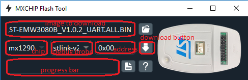

Release Notes for MX_WIFI Component Driver
Copyright © 2020 STMicroelectronics
Microcontrollers Division - Application Team
License
Licensed by ST under BSD 3-Clause (the “License”). You may not use this package except in compliance with the License.
You may obtain a copy of the License at: BSD-3-Clause
Purpose
This directory contains the MX_WIFI component driver.
Update History
Main changes
- First official release of MX_WIFI WiFi component.
Firmware update (click to expand)
This section provides you with a step by step procedure to upload the MXCHIP firmware of an MXCHIP Arduino shield using the MXCHIP UART interface.
Prerequisites:
- The steps described in this document use Tera Term as a terminal emulator. For the firmware update, you should not use a version more recent than 4.85 as you may encounter some issues when using YModem.
- The material you need to have is:
- a USB to TTL connector
- 4 male to female cables with PCX connectors
- 1 female to female cable with PCX connectors
Connect the TTL signals to the MXCHIP Arduino shield: 3.3 V, GND, Tx and Rx and loop the Boot MXCHIP Arduino shield – See the below picture:

Check that the version of your Tera Term is not more recent than 4.85 using the “Help/About Tera Term” … menu:
Open the Setup/Serial port… and set the Port com correcponding to your setup and the other values as follows:
Press the “Reset” button of the MXCHIP Arduino shield. A menu will be displayed in the Tera Term window as in the below picture:
You have to enter this command: 4 -dev 1 -start 0x0 -end 0x160000:

The board is ready to receive the new firmware:

Select YMODEM Sending:

Then select the firmware available under Firmware\Drivers\BSP\Components\mx_wifi\firmware or Firmware\Drivers\BSPv2\Components\mx_wifi\firmware (one option only will be available in your package).
The firmware download is about to start. It takes up to around 30 seconds.
The firmware upgrade is started:

The firmware upgrade is completed:
More documentation on the MXCHIP bootloader can be found at https://en.docs.mxchip.com/#/docs/mxoscharacter/1.Bootloader
This section provides you with a step by step procedure to upload the MXCHIP firmware of an MXCHIP Arduino shield using the SWD interface.
The MXCHIP-FlashTool is a software tool running on PC in order to download a MXCHIP firmware using the SWD interface.
The MXCHIP-FlashTool is supported on these PC OS:
- Windows 7/10
- MacOS
- Linux
And with these debug probes:
- J-LINK
- ST-LINK_V2
- ST-LINK_V2-1
Prerequisites:
- The MXCHIP-Flash tool is to be installed as described into the below “Tool installation” section.
- The material you need to have is:
- A debug probe
- 4 female to female cables with PCX connectors
- A 3.3 V generator. Another board can be used as shown in the below picture supplying the power via 2 male to male cables with PCX connectors Tool installation:
- Python3 installation:
- Goto the official website to download python: https://www.python.org/
- Download and install the MXCHIP-Flash tool with pip3
- run this command: pip3 install mflash -i https://pypi.tuna.tsinghua.edu.cn/simple
- For Windows only, install the needed USB driver
- Download zadig from https://zadig.akeo.ie
- Run zadig with administrator rights
- Select: Options / List All Devices / Bulk interface / Replace Driver
Connect the debug probe to the MXCHIP board
- Debug probe VCC to MXCHIP VDD
- Debug probe DIO to MXCHIP DIO
- Debug probe SCK to MXCHIP CLK
- Debug probe GND to MXCHIP GND
Connect the +3.3 V and GND MXCHIP board to a power supply.

USB driver verification. Opening your Device Manager (on Windows) you should see the USB driver as per the below picture
Download your image
- Right click on your bin file to download, select mflash-Download, see next picture
- The image to be downloaded shall have the ALL.BIN suffix

- Select chip: mx1290
- Select interface: stlink-v2 (or stlink-v2-1/j-link depend on your hardware)
- Set address: 0

- Click download button to start.
- Wait until the progress bar reaches 100%.